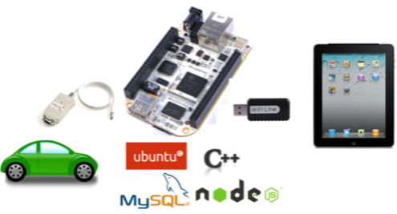
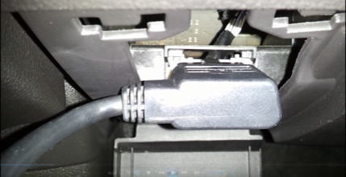

A 'Blackbox' for automobiles
Project Blog lemonaid-ese519/Tumblr View the Project on GitHub ese519/LemonAid
LemonAid is a black-box for automobiles. It provides a gateway to connect to the vehicle’s information bus. The gateway can records vital parameters for analysis and efficiency improvement. After intercepting data from the car, an algorithm is applied on the newly intercepted values to detect anomalies in the engine, body or chassis of the car. These anomalies are categorized as key events which may be of interest for insurance companies in case of an accident and for analysis in general. Insurance analysts can use data about driving habits, compliance to traffic rules and activity of the vehicle owner to overcome inefficiencies in insurance pricing. This system is extremely useful as it can aid accident scene investigators to recreate the scenario and playback all vital moments.

The LemonAid system is divided into two main components:
To establish connection with the automobile (Ford Focus and Toyota Prius in our case) we connected the PEAK CAN-USB cable to the car's OBD port. Other end of the cable is plugged into the gateway.

The CAN monitor program sniff the CAN bus for specific CAN ids and records corresponding values in the database.
The messages flowing in the CAN bus are of the following format:
Example: 0x230 8 01 34 00 00 fe 44 00 a9
The CAN id is indicated by the hex representation. Following the CAN id is the number of bytes of data. Actual values
following after the specified size.
To make sense of these numbers, we tested created various events in the car and recorded the change in these values. This part
is time consuming. Once we determined the meaning of particular CAN ids, we had to convert the hex values into numbers that made sense.
| ID | Information | Unit / Value |
|---|---|---|
| 0x0D0 | Gear | ['P', 'R', 'N', 'D'] |
| 0x0C8 | Light | ['Low', 'Night', 'Deep'] |
| 0x130 | Speed | [kmph] |
| 0x080 | Throttle Position | [%] |
| 0x0B0 | Steering Angle | [(-450, 450) degrees] |
| 0x340 | Engine | ['On', 'Off'] |
| 0x360 | Door | ['Ajar', 'Closed'] |
| 0x310 | Turn indicators | ['Left', 'Right', 'Parking'] |
| 0x090 | RPM | [(0, 5) x1000] |
| ID | Information | Unit / Value |
|---|---|---|
| 0x224 | Brake | ['On', 'Off'] |
| 0x620 | Door | ['Ajar', 'Closed'] |
| 0x127 | Gear | ['P', 'R', 'N', 'D'] |
| 0x622 | Light | ['Low', 'Night', 'Deep'] |
| 0x025 | Steering Angle | [(-540, 540) degrees] |
The iPad app connects to the LemonAid gateway using web sockets through adhoc wifi network hosted by the gateway.
A server hosted on the gateway serves the application with new values from the automobile by sending JSON objects asynchronously.
Main components of the application are:
This feature of the application receives live data from the gateway and updates the UI.
The dashboard can show display parameters like speed, rpm, door status, brake status, lights, etc. In
the background, these parameters are backed up in the database for analysis.
As shown in the image above, this feature of the application shows live parameters and plots
important parameters on an oscilloscope. Apart from this, the map shows the routes taken during a particular trip
so that critical events can be analyzed better. The main component of this feature is that the user can
pause the trip and rewind playback the trip with all the corresponding values updating based on the timestamp. This
feature is extremely useful in case of accidents where we need to find critical events leading to the accident. During
the pause and playback, all new values are stored in a cache and as soon as the trip observation mode is resumed, all cached
values are pushed on the oscilloscope.
The analysis platform is extremely useful as it displays all the trips made by the car. On selecting a particular trip, all parameters and critical events retrieved from the automobile are displayed on a graph with common timeline. The user can easily see all the values at a particular instant in time and decipher mysterious accident scenarios. Moreover, stored trip data can be used to improve driving efficiency and hence improve the performance of the automobile.
The communication between the iPad and the gateway is done by opening a socket connection. Once the connection is established the iPad sends a request to the server on the gateway to send live data. To acknowledge this request, the server forms loads all parameters in a JSON object and emits it to the iPad. To close the socket, the iPad initiates the process by sending a disconnection warning. The server acknowledges that request and stops sending data to the iPad.
We simulated different accident scenarios and found that the LemonAid system can detect and plot critical events accurately. Before running the analysis platform, our algorithm detects sudden change in speed, abnormal steering angles, hard brakes, sharp turn and other critical parameters like gear position, throttle position, etc. LemonAid gateway along with the iPad application can be used to recreate and analyze accidents, aid insurance companies and help the user detect anomalies in driving patterns. The gateway can be used by developers to enhance the system by customizing application according to particular needs (eg: Kart racing, Rally, crash investigation, etc.). Below is the video of the working system and simulated accident scenarios.